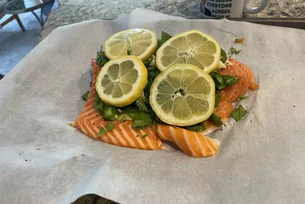

Parchment Baked Salmon

Description
Ingredients
- 1 (8 ounce) salmon fillet
- salt and ground black pepper to taste
- 1/4 cup chopped basil leaves
- olive oil cooking spray
- 1 lemon, thinly sliced
Steps
- Preheat the oven to 400 degrees F (200 degrees C). Move an oven rack to the lowest position.
- Place salmon fillet, skin-side down, in the middle of a large piece of parchment paper; season with salt and black pepper. Cut two 3-inch slits into fillet with a sharp knife. Stuff chopped basil leaves into the slits. Spray fillet with cooking spray and arrange lemon slices on top.
- Fold the edges of parchment paper over fillet several times to seal it into an airtight packet. Place sealed packet onto a baking sheet.
- Bake in the preheated oven on the bottom rack until salmon flakes easily and flesh is pink and opaque with an interior of slightly darker pink color, about 25 minutes. An instant-read thermometer inserted into the thickest part of fillet should read at least 145 degrees F (65 degrees C). To serve, cut open the parchment paper and remove lemon slices before plating.